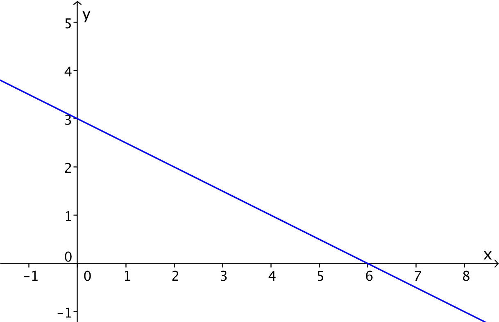

Lineære funksjoner
Contents
Lineære funksjoner¶
Her skal du lære om egenskapene til de lineære funksjonene. Du skal kunne finne en funksjon som beskriver en situasjon tegne grafen til en lineær funksjon løse ulikheter og likninger hvor lineære funksjoner inngår.
Du skal også kunne tolke tallene \(a\) og \(b\) i funksjonsuttrykket $\(f(x)=ax+b\)$
Disse tallene kan tolkes geometrisk og du skal kunne bruke dette til å bestemme funksjonsuttrykket til en lineær funksjon når du kjenner to punkt på grafen.

Hva er en linær funksjon?¶
I videoen skal du få se hva en lineær funksjon er. Vi viser deg også et eksempel der en slik funksjon dukker opp.
Oppgave 1
I eksempelet med mobilabonnement var månedsprisen \(f(x)=0,39x+40\) dersom du sendte \(x\) tekstmeldinger.
Hvor mange tekstmeldinger kan du sende for 150 kroner?
Oppgave 2
Stig er nesten tom for bensin og stopper ved bensinstasjonen. I tillegg til å fylle bensin kjøper han et ukeblad for 80 kroner. Bensinprisen er 15 kroner per liter. Hva er sammenhengen mellom antall liter Stig fyller og prisen han må betale på bensinstasjonen? Her kan vi la x være antall liter Stig fyller på tanken. Da må han betale \(f(x)=15x+80\) kroner. Vi kan illustrere dette grafisk slik:
Oppgave 3
Line jobber som telefonselger. Hun har en grunnlønn på 110 kroner timen. I tillegg får hun 12 kroner for hvert salg hun oppnår.
Lag en funksjon \(f(x)\) som gir Lines timelønn dersom hun oppnår \(x \) salg i timen. Velg det rette alternativet under.
Fasit
\( f(x)=12x+110\)
Tegning av grafen til en lineær funksjon¶
I videoen nedenfor viser vi hvordan du kan plotte grafen til en lineær funksjon uten å bruke digitale hjelpemidler.
Oppgave 4
Nå vil vi at du skal bruke papir og blyant og tegne grafene til funksjonene nedenfor i et koordinatsystem.
a) \(f(X)=2x-4\)
b) \(g(x)= x+1\)
c) \(h(x)=-0.5x+2\)
Lineære funksjoner og ulikheter¶
I videoen nedenfor viser vi hvordan du grafisk og ved regning kan løse en lineær ulikhet.
Oppgave 5
I forrige film så vi at utgiftene til kaffimaskin 1 kunne beskrives ved funksjonen
Kaffimaskin 2 kunne beskrives ved
En annen kaffimaskin 3 koster 1500 kroner å kjøpe. I tillegg koster det 2,71 kroner per kopp.
Bestem antall kopper du kan lage med kaffimaskin 3 for at denne skal være det rimeligste alternativet.
I videoen nedenfor ser vi på hva som skjer dersom vi må dele eller gange med et negativt tall.
Før vi går videre vil vi gi deg en liten utfordring. Dra i glideren nedenfor og se hva som skjer. Hvor ble det av det ene kvadratet?
Oppgave 6
Nedenfor ser du grafen til en funksjon \(f\). Vi vet at siden grafen er en linje, er \(f\) en lineær funksjon. Det vil si at \(f(x)=ax+b\) for passe tall \(a\) og \(b\).

Se om du ut fra grafen klarer å bestemme \(a\) og \(b\). Forklar hvordan du gikk fram for å bestemme tallene.
Oppgave 7
Hva skjer med grafen til en funksjon \(g(x)=ax+ b\) dersom
Vi endrer \(b\) fra \(b=-2\) til \(b=3\)? Vi endrer \(a\) fra \( a=1\) til \( a=2\)?
Betydningen av a og b¶
På forrige side ble du utfordret til å si noe om hvordan en endring i tallene \(a\) og \(b\) endrer grafen til \(g(x)=ax+b\).
På appleten nedenfor kan du endre på \(a\) og \(b\) og se hva som skjer.
Stigningstallet til en lineær funksjon¶
Til nå har du sett at tallet \(b\) forteller hvor grafen til \(f(x)=ax+b\) skjærer \(y\)-aksen. Du har sikkert også oppdaget at tallet \(a\) har noe med hvor bratt grafen er.
I videoen nedenfor skal du komme fram til en fin tolkning av dette tallet \(a\).